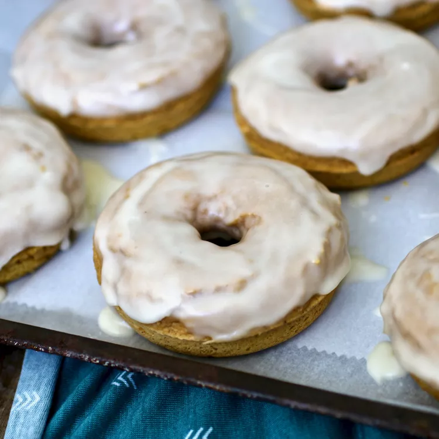

Glazed Pumpkin Donuts

Description
Pumpkin + donuts = awesome! These cake donuts are baked and then lightly glazed or covered in cinnamon sugar.
Ingredients
Donuts:
- 2 cups all-purpose flour
- ½ cup packed brown sugar
- 1 ½ teaspoons baking powder
- 1 ½ teaspoons pumpkin pie spice
- ½ teaspoon salt
- ¼ teaspoon baking soda
- 1 cup pumpkin purée
- 2 large eggs
- ¼ cup milk
- ¼ cup butter, softened
Glaze:
- 1 ½ cups confectioners' sugar
- ¼ cup butter, melted
- 2 tablespoons water
- 1 teaspoon vanilla extract
Steps
- Preheat the oven to 325 degrees F (165 degrees C). Grease a donut pan. Line a baking sheet with parchment paper.
- Combine flour, brown sugar, baking powder, pumpkin pie spice, salt, and baking soda in a bowl; beat in pumpkin purée, eggs, milk, and ¼ cup softened butter with an electric mixer on low speed until batter is just combined. Spoon batter into the prepared donut pan.
- Bake in the preheated oven until donuts spring back when gently pressed, 8 to 10 minutes.
- Meanwhile, beat confectioners' sugar, ¼ cup melted butter, water, and vanilla extract together in a bowl until glaze is smooth.
- Dip warm donuts into glaze, allowing any excess glaze to drip back into the bowl. Place glazed donuts onto the prepared baking sheet to cool.
Home